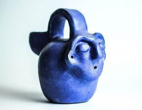
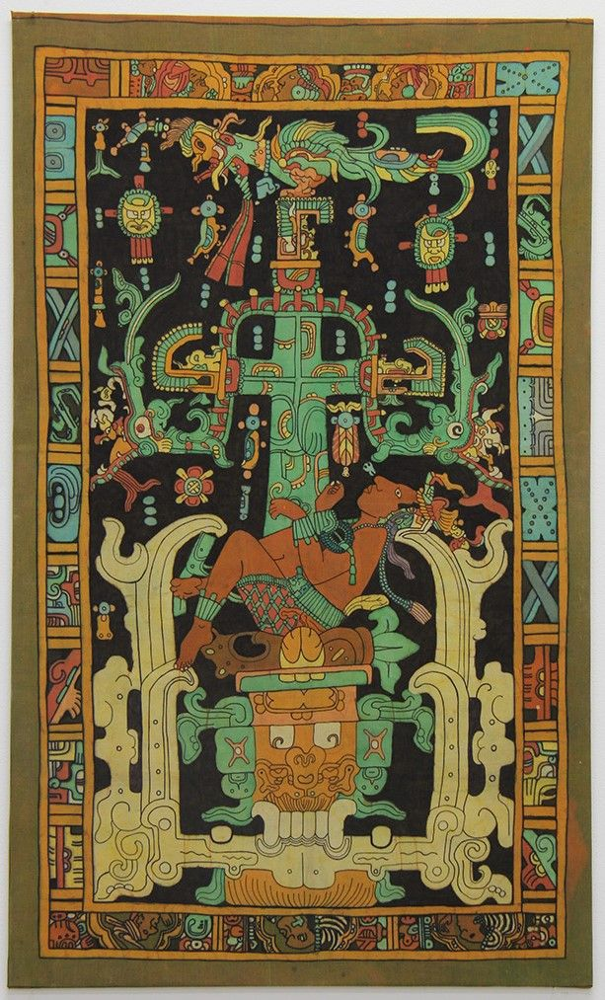
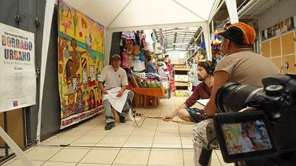

Max Sepúlveda
Artista visual, artesano y gestor cultural.
Max Sepúlveda
Áreas de obra y oficio
Oficios, técnicas y procesos colaborativos que articulan su trabajo.
01Obra y oficio
Alfarería
Creación de piezas utilitarias y decorativas con técnicas y diseños ancestrales.
02Obra y oficio
Cerámica
Técnica de moldes, modelado, esgrafiado, uso de engobes y vidriados. Exploración de formas tradicionales con una mirada contemporánea.

03Obra y oficio
Bordado
Exploración con puntadas tradicionales, mapas textiles colectivos y procesos comunitarios de memoria.
04Obra y oficio
Batik y bordado
Fusión contemporánea de batik y bordado para poner en valor el patrimonio natural y cultural.
05Obra y oficio
Tejidos
Telar mapuche, telar de peine, telar cuadrado, telar artístico, cordonería andina y joyería textil.
06Obra y oficio
Técnicas de teñido por reserva
Batik, pintura en seda y teñido por amarras. Diseños precolombinos y contemporáneos.

07Obra y oficio
Audiovisuales
Dirección de arte y realización de documentales que registran y difunden procesos creativos comunitarios.

08Obra y oficio
Arte colaborativo
Bordados de mapas de la memoria, murales textiles, pasacalles e intervenciones artísticas en el paisaje natural y cultural.
Sobre Max
Artista visual, artesano y gestor cultural oriundo de San Vicente de Tagua Tagua, Chile. Más de veinte años construyendo obra donde conviven la alfarería, el textil, el arte colaborativo y la dirección audiovisual.
Su trabajo nace del diálogo con comunidades: juntos reflexionan sobre el territorio, la memoria y la identidad, y desde ese encuentro co-crean obras que visibilizan patrimonio y vínculos afectivos.

Contacto
¿Interesado en colaborar, contratar un taller o conocer más sobre su obra? No dudes en escribirle.